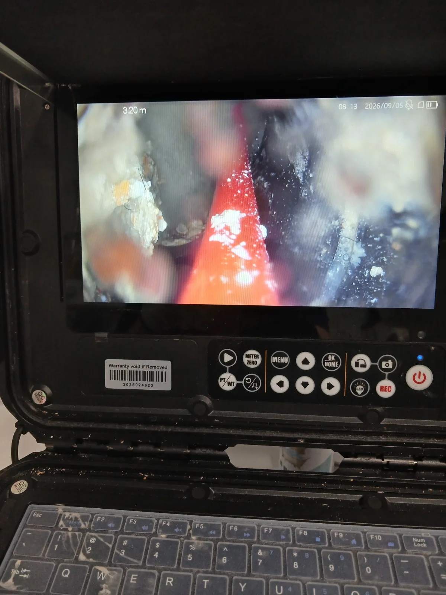
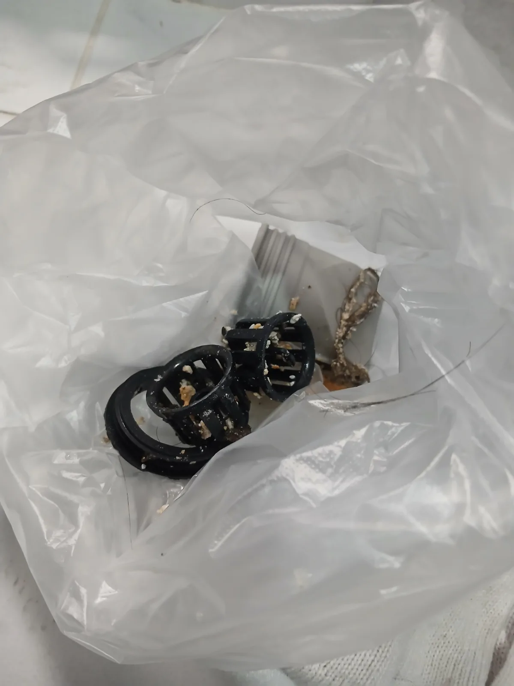

강남구 신사동 하수구막힘, 현장 도착 후 진단
강남구 신사동에서 욕실 하수구막힘으로 배수가 원활하지 않다는 요청을 받고 전문 장비를 준비해 신속하게 현장으로 이동했습니다.
하수구가 막혔다고 해서 처음부터 강한 장비를 사용하는 것이 좋은 해결 방법은 아닙니다. 막힘 위치와 배관 상태에 따라 필요한 작업이 달라지기 때문에 정확한 진단이 우선입니다.
신라건축설비는 현장 증상과 배관 구조를 먼저 살펴본 뒤 배관 내시경을 이용해 내부 상태를 확인했습니다. 내시경 화면을 통해 점검한 결과 배관 안쪽에 머리카락과 생활 이물질, 오염물이 서로 엉켜 물의 흐름을 방해하고 있었습니다.
변기막힘·싱크대막힘·하수구막힘을 전문적으로 처리해 온 신라건축설비는 겉으로 드러난 증상만 보고 작업하기보다 실제 막힘 위치와 배관 상태를 확인하고 현장에 적합한 장비와 공법을 선택하는 것을 중요하게 생각합니다.
1단계: 증상 확인과 필요한 장비 작업
내시경 진단 결과를 바탕으로 샤프트 장비를 투입했습니다. 회전하는 샤프트를 이용해 배관 내부에 엉켜 있던 머리카락과 이물질을 분리하면서 막힌 구간의 물길을 확보했습니다.
욕실 하수구는 머리카락과 생활 이물질이 반복적으로 유입되면서 오염물과 함께 뭉쳐 막힘이 커질 수 있습니다. 따라서 단순 관통으로 작은 물길만 만드는 것보다 배관 상태를 확인하면서 원인이 되는 이물질을 제거하는 것이 중요합니다.
신라건축설비는 모든 하수구막힘 현장에 동일한 작업을 적용하지 않습니다. 배관 구조와 막힘 정도를 먼저 확인한 뒤 내시경검사, 석션, 관통, 샤프트, 배관세척 등 현장에 필요한 공법을 판단해 작업합니다.

2단계: 원인 구간 처리와 정상 작동 확인
샤프트로 분리한 이물질이 배관 내부에 그대로 남지 않도록 습식 석션작업을 이어서 진행했습니다.
강한 흡입력을 이용해 배관 내부의 오염수와 이물질을 회수했고, 실제로 머리카락을 비롯해 배수 흐름을 방해하던 이물질이 밖으로 제거되는 것을 확인할 수 있었습니다.
샤프트와 석션을 복합적으로 운용한 뒤에는 물을 흘려보내 실제 배수 상태를 다시 확인했습니다. 장비 작업만 끝내는 것이 아니라 욕실을 사용하는 환경에서 물이 정상적으로 빠지는지 확인한 뒤 작업 내용과 배관 관리 방법까지 안내했습니다.

작업 결과와 재발 방지 안내
배관 내부에서 하수구막힘을 만들고 있던 머리카락과 이물질을 제거한 뒤 욕실 하수구의 원활한 배수 흐름을 확보했습니다.
신라건축설비는 강남구 신사동을 비롯한 서울·경기 전 지역의 하수구막힘 현장에 신속하게 출동하고 있습니다. 생활 하수구막힘부터 배관 내시경검사, 석션, 관통, 샤프트, 고압세척은 물론 공용배관·오수관과 대형 배관공사까지 현장 규모와 배관 상태에 맞춰 대응할 수 있습니다.
막힘 업체를 선택할 때는 처음 안내받은 가격만 비교하기보다 실제 배관 상태를 어떻게 진단하는지, 어떤 작업이 필요한지, 추가 작업이 필요한 경우 그 이유와 비용을 명확하게 설명하는지도 함께 확인하는 것이 좋습니다.
신라건축설비는 불필요하게 작업 범위를 늘리기보다 현장 상태를 정확하게 확인하고 필요한 작업 내용과 범위를 고객에게 설명하는 것을 중요하게 생각합니다. 작업 과정과 비용을 투명하게 안내하고 작업 후에는 실제 통수 상태까지 확인해 고객이 결과를 직접 확인할 수 있도록 진행하고 있습니다.
같은 하수구막힘이라도 원인과 배관 구조에 따라 해결 방법은 달라질 수 있습니다. 정확한 진단과 적합한 장비 선택, 합리적인 비용 안내와 작업 후 확인까지 책임 있게 진행하는 전문업체를 선택하는 것이 불필요한 추가 작업과 예상하지 못한 비용 부담을 줄이는 방법입니다.
욕실 하수구막힘을 예방하려면 머리카락과 생활 이물질이 배관으로 직접 유입되지 않도록 거름망을 관리하고, 평소보다 물이 느리게 내려가기 시작했다면 완전히 막히거나 역류하기 전에 점검을 받는 것이 좋습니다.
최종 조치: 배관 내시경으로 막힘 구간과 내부 상태를 확인한 뒤 샤프트 작업으로 엉켜 있던 이물질을 분리했습니다. 이어 습식 석션기를 이용해 배관 내부의 오염수와 분리된 이물질을 흡입·회수하고 물을 흘려보내 정상적인 통수 상태를 확인했습니다.
현장 방문 전 확인하는 비용과 작업 범위
신라건축설비는 현장 증상과 배관 구조를 확인한 뒤 필요한 작업과 예상 비용을 안내합니다. 단순 관통으로 해결되는지, 배관내시경·석션·고압세척 또는 추가 장비가 필요한지는 현장 상태에 따라 달라집니다. 출장비와 야간 작업비, 추가 장비 비용이 발생할 수 있는 경우 작업 전에 먼저 설명하고 동의를 받은 범위에서 진행합니다.
업체를 선택할 때 확인할 사항
무조건적인 ‘0원’ 표현보다 실제 작업 범위, 추가 비용 조건, 사용 장비와 사후 대응 기준을 확인하는 것이 중요합니다. 해결되지 않았을 때의 비용 기준과 작업 후 동일 증상 발생 시 점검 범위를 사전에 문의해두면 불필요한 분쟁을 줄일 수 있습니다.
강남구 하수구막힘 자주 묻는 질문
여러 배수구가 동시에 역류하면 공용배관 문제인가요?
욕실 바닥 하수구의 물이 원활하게 빠지지 않는 배수 불량 증상이 발생했습니다. 이런 증상을 방치하면 막힘이 심해지면서 물이 바닥으로 차오르거나 역류할 수 있어 배관 내부의 정확한 점검이 필요한 상황이었습니다.처럼 증상이 나타나더라도 원인은 현장마다 다를 수 있습니다. 장비와 배관 구조를 확인한 뒤 필요한 작업 범위를 안내합니다.
고압세척이 항상 필요한가요?
작업 전 증상과 현장 여건을 확인해 예상 범위와 비용을 먼저 안내합니다. 변기 탈거, 장비 추가 투입 또는 공용배관 작업이 필요한 경우 고객 동의 없이 임의로 진행하지 않습니다.
작업 전 추가 비용을 확인할 수 있나요?
완료 후 정상 작동을 함께 확인하고 작업 범위에 따른 사후 안내를 드립니다. 동일 증상이 반복되면 현장 기록을 기준으로 원인을 다시 점검합니다.
하수구막힘 서울·경기 출동지역
신라건축설비는 강남구 신사동 현장을 포함해 서울 25개 구와 경기도 31개 시·군의 배관 문제를 상담합니다. 현장 거리와 기사 배정 상황에 따라 출동 가능 여부를 먼저 안내드립니다.
서울 전 지역
강남구 · 강동구 · 강북구 · 강서구 · 관악구 · 광진구 · 구로구 · 금천구 · 노원구 · 도봉구 · 동대문구 · 동작구 · 마포구 · 서대문구 · 서초구 · 성동구 · 성북구 · 송파구 · 양천구 · 영등포구 · 용산구 · 은평구 · 종로구 · 중구 · 중랑구
경기도 주요 출동지역
수원시 · 용인시 · 고양시 · 화성시 · 성남시 · 부천시 · 남양주시 · 안산시 · 평택시 · 안양시 · 시흥시 · 파주시 · 김포시 · 의정부시 · 광주시 · 하남시 · 광명시 · 군포시 · 양주시 · 오산시 · 이천시 · 안성시 · 구리시 · 의왕시 · 포천시 · 양평군 · 여주시 · 동두천시 · 과천시 · 가평군 · 연천군